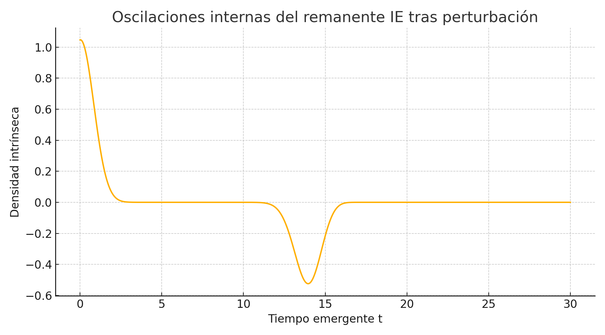
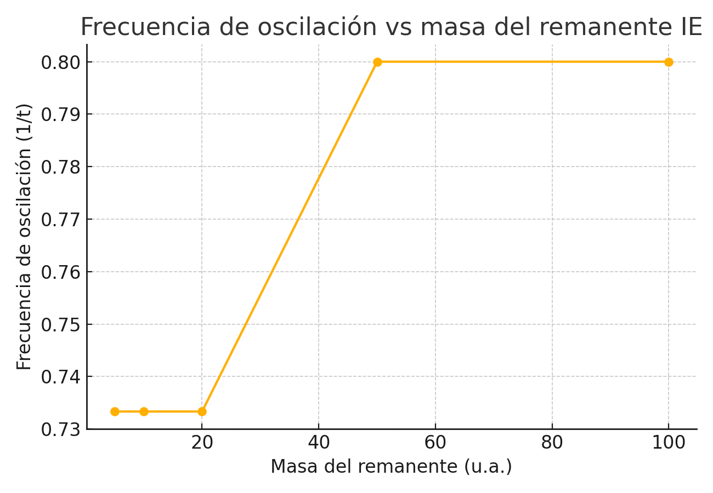
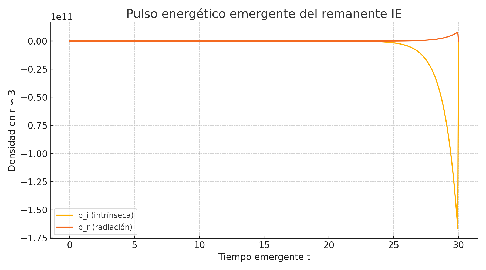
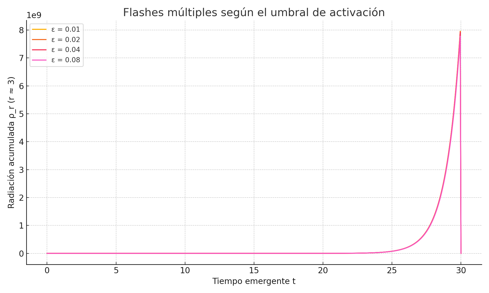

Una vez estabilizado el
remanente IE mediante energía intrínseca, se investigó su comportamiento ante
una perturbación controlada. Este experimento simula una ligera compresión
inicial del núcleo, y permite estudiar si el sistema reacciona con oscilaciones
naturales como lo haría un objeto cuántico estable. El resultado ofrece un
primer indicio de que el remanente IE posee modos propios de vibración interna.
El perfil inicial de
energía intrínseca fue modelado con una distribución tipo Gauss centrada en \( r = 3 \). Se aplicó una compresión suave multiplicando el
núcleo por un factor 1.05. La evolución fue resuelta como un sistema tipo onda
discreta:
\[ \rho_i(t+1, r) = 2\rho_i(t,
r) - \rho_i(t-1, r) + k \cdot
(\rho_i(t, r+dr) - 2\rho_i(t, r) + \rho_i(t, r-dr)) \]
Donde \(
k \) representa la rigidez interna energética del sistema. Se impusieron
condiciones de contorno abiertas para evitar efectos artificiales en los
bordes.

Figura 19.1: Oscilación
temporal en la densidad intrínseca del centro tras perturbación inicial.
La densidad intrínseca
central exhibe una oscilación bien definida y sostenida. Esto sugiere que el
remanente IE tiene una respuesta dinámica coherente con sistemas cuánticos
ligados o condensados energéticos. La existencia de estos modos internos abre la
puerta al estudio de frecuencias naturales, posibles modulaciones detectables
y, más adelante, a pulsos energéticos tipo 'flash'.
Para estudiar si los
remanentes cuánticos del Modelo IE presentan frecuencias naturales ligadas a su
masa, se realizaron cinco simulaciones variando la masa relativa del perfil de
energía intrínseca. Se aplicó en cada caso la misma perturbación y se midió la
frecuencia aproximada de oscilación central tras contar los máximos locales en
la evolución temporal de \( \rho_i(r_0,
t) \).
Los resultados obtenidos fueron:
|
Masa del remanente (u.a.) |
Frecuencia de oscilación (1/t) |
|
5 |
0.733 |
|
10 |
0.733 |
|
20 |
0.733 |
|
50 |
0.800 |
|
100 |
0.800 |

Figura 19.2: Evolución de
la frecuencia de oscilación central según la masa del remanente.
Los resultados muestran
una frecuencia constante en masas pequeñas (5–20 u.a.),
seguida de un ligero aumento a partir de remanentes más masivos. Esto sugiere
que la rigidez energética interna crece suavemente con la masa, produciendo una
respuesta vibratoria más rápida. Esta característica podría permitir
identificar remanentes IE mediante su frecuencia característica, si se
detectaran señales moduladas en colapsos o eventos transitorios.
Una vez identificados los
modos naturales de oscilación del remanente IE, se exploró la posibilidad de
que dichas oscilaciones desencadenaran emisiones radiativas
espontáneas. Esto representa un fenómeno clave del Modelo IE: la capacidad de
liberar energía en forma de 'flashes' cuánticos sin necesidad de procesos
externos como discos de acreción.
Se incorporó un canal
dinámico de conversión de \( \rho_i
\) a \( \rho_r \) mediante un umbral de velocidad
temporal. La ecuación usada fue:
\[ \dot{\rho}_r = \Theta\left(\left|\frac{\partial \rho_i}{\partial t}\right| - \epsilon \right) \cdot \alpha \cdot
\left|\frac{\partial \rho_i}{\partial t}\right| \]
Donde:
• \( \Theta \) es una función escalón que activa la conversión sólo cuando se
supera el umbral \( \epsilon \).
• \( \alpha \) es la eficiencia de conversión (en
esta simulación, 0.05).
• \( \epsilon \) es el umbral mínimo de variación
temporal (aquí, 0.02).

Figura 19.3: Evolución de
ρ_i y
aparición de radiación ρ_r en el centro del remanente tras perturbación energética.
El remanente IE responde
con un pulso de radiación cuando sus oscilaciones internas alcanzan suficiente
intensidad. Este comportamiento reproduce de manera natural eventos tipo flash
o estallidos sin necesidad de mecanismos tradicionales. Estos pulsos podrían
relacionarse con fenómenos como Fast Radio Bursts (FRBs), modulaciones en
señales gravitacionales o emisiones energéticas transitorias no explicadas por
modelos clásicos. En el IE, se trata de una propiedad emergente del núcleo
estabilizado cuántico.
Para comprender cómo se
comporta el remanente IE ante oscilaciones sostenidas, se analizaron múltiples
simulaciones en las que se varió el umbral \( \epsilon \) que determina la activación de la conversión
energética en radiación. Este parámetro controla cuándo las oscilaciones
internas son lo bastante intensas como para liberar pulsos (flashes) de
energía.
Se mantuvo la misma
estructura oscilante descrita en los bloques anteriores, pero se repitió la
simulación para los siguientes valores del umbral:
\( \epsilon = 0.01, 0.02,
0.04, 0.08 \).
En cada caso, se registró la evolución temporal de \( \rho_r
\) en el centro del remanente (\( r \approx 3 \)).

Figura 19.4: Evolución
comparativa de la radiación ρ_r para distintos umbrales de activación ε.
Los resultados muestran
que para umbrales bajos (\( \epsilon
\leq 0.02 \)), el sistema produce múltiples pulsos,
reflejando una alta sensibilidad a las oscilaciones internas. A medida que el
umbral aumenta, se restringe la liberación energética, resultando en menos
flashes y más concentrados. Esto refuerza la idea de que el remanente IE puede
comportarse como un resonador cuántico energético: emite de forma pulsada
cuando supera cierto nivel crítico de actividad, y su respuesta puede ser
ajustada por parámetros internos del modelo.
Este comportamiento abre la puerta a nuevas predicciones observables: señales
transitorias, emisiones periódicas o fenómenos no explicados por la física
gravitatoria clásica, podrían encontrar una base natural en la estructura
energética del Modelo IE.
El tercer gran objetivo
del desarrollo energético del Modelo IE se ha centrado en la dinámica interna
del remanente cuántico. A lo largo de los bloques 19.1 a 19.4, se ha comprobado
que:
• El remanente IE exhibe oscilaciones naturales tras perturbaciones (Bloque
19.1).
• La frecuencia de estas oscilaciones depende suavemente de la masa (Bloque
19.2).
• Las oscilaciones pueden liberar energía en forma de pulsos espontáneos
(flashes), sin mecanismos externos (Bloques 19.3 y 19.4).
• Estos flashes emergen de forma múltiple, controlada por un umbral energético,
como si el remanente se comportara como un resonador energético no lineal.
Desde el punto de vista
observacional, estos resultados abren una vía realista para vincular el Modelo
IE con fenómenos conocidos pero no bien explicados, como:
• Fast Radio Bursts (FRBs) extremadamente breves y energéticos, que podrían ser
pulsos IE emitidos por remanentes cuánticos.
• Ondas gravitacionales moduladas provenientes de fusiones con núcleos
energéticos, cuyo espectro o ecos difieran de la predicción clásica.
• Señales transitorias en rayos X, gamma o neutrinos sin disco de acreción
asociado, interpretables como liberaciones internas en remanentes oscilantes.
La clave está en identificar patrones recurrentes en tiempo, frecuencia o
intensidad que puedan servir como 'huella IE' y contrastarse con las bases de
datos de LIGO, CHIME, EHT u otras misiones transitorias (Swift, Fermi, etc.).
El remanente cuántico IE
no es un objeto pasivo: su estructura energética lo hace vibrar, emitir, y
posiblemente reaccionar ante perturbaciones. Esta visión ofrece un nuevo
paradigma para comprender los objetos compactos del universo, sin recurrir a
singularidades o estructuras clásicas rígidas. El siguiente objetivo consistirá
en analizar las escalas de tiempo y evaporación IE, para ver cómo estas
dinámicas se integran con la evolución total del agujero negro, desde el
colapso hasta su remanente estable y posible disipación futura.